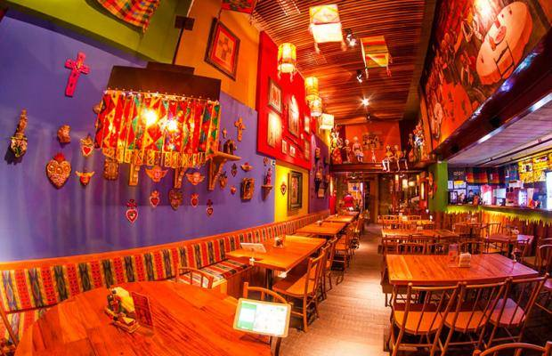

Bem vindo Amigos
Com fundadores direto do Méxido, o "restaurant amigo" é um ambiente familiar, localizado em São Paulo, e feito para quem
quer se sentir no México, e experiemntar todas as delicias vindas da américa central,
com todo o toque especial de quem entende do assunto.
